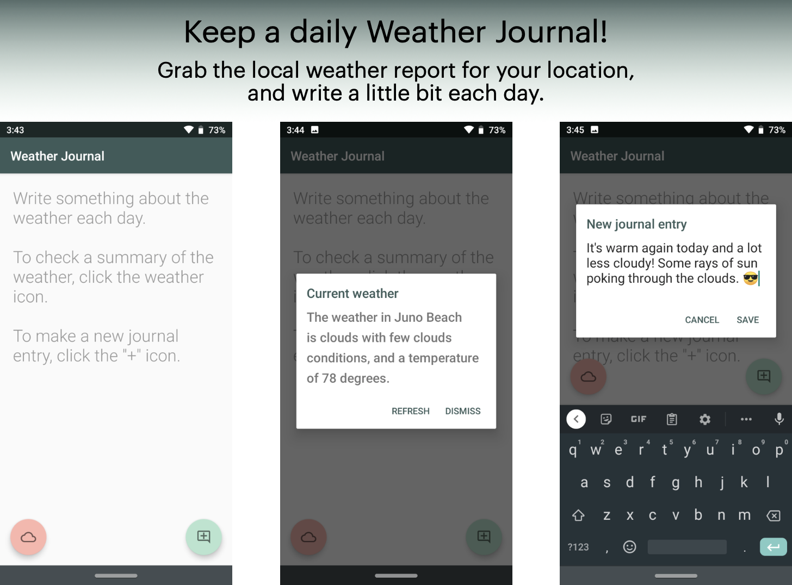
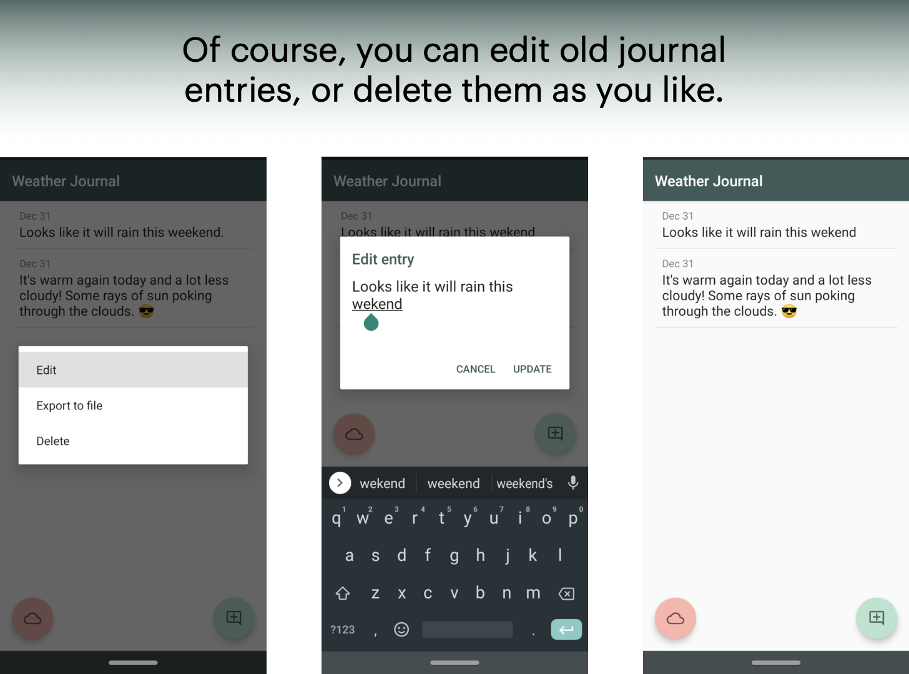
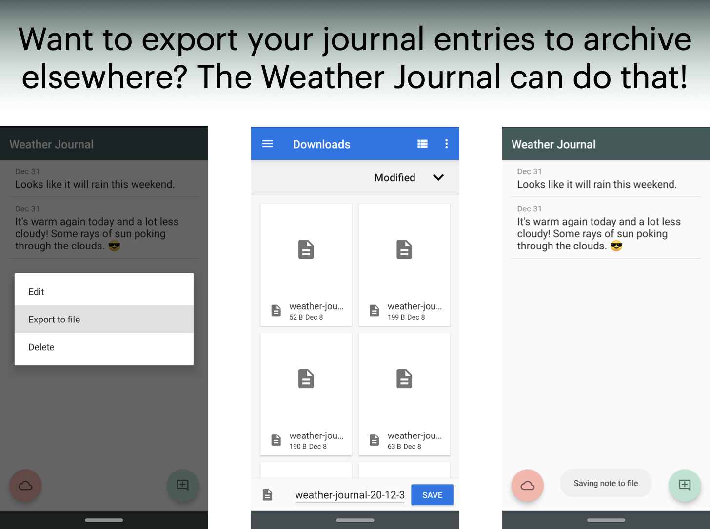

Weather Journal
I wrote an Android application for keeping a journal on the local weather.

Getting in the practice of writing a bit daily can be a helpful grounding exercise. Weather Journal is a native Android application, written in Java, with the simple premise of being a place to go each day to maintain a bit of writing ritual.
It interfaces with Android location services for GPS location, and interfaces with a third-party web API to fetch your local weather report.
Journal entries are stored in a local SQLite database, and can be edited or deleted from the app. The app also interfaces with the file system to export journal notes to text files, wherever you may want to archive them.
Pictures
Below you can see some more demo screenshots to get an idea of the app:

